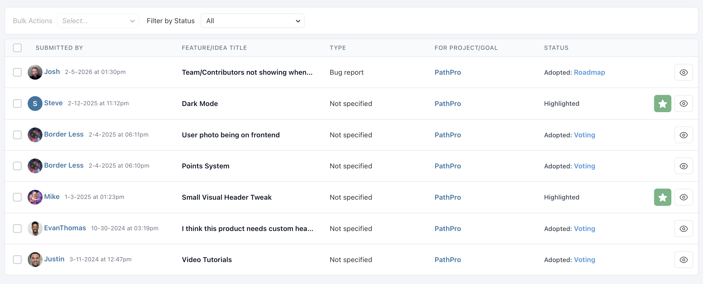

Community Submissions
Submissions are your community's direct line to your team. Through the Feedback button on your project's public pages, community members can submit feature requests, bug reports, improvement ideas, and questions -- giving you a structured inbox of user feedback to triage and act on.
How Submissions Work
When submissions are enabled for your project, community members see a "Feedback" button on your project's public pages. Clicking this button opens a submission form where they can describe their feedback, select a type, and set an urgency level.
Submissions are private by default -- only your team (Admins and Team Members) can see incoming submissions. The submitter receives a confirmation that their feedback was received, but they cannot see other people's submissions. This privacy encourages honest, unfiltered feedback because community members aren't self-censoring based on what others have said.
The submission form is intentionally simple to keep the barrier to participation as low as possible. Community members fill in a title, a description, select the type of feedback, and optionally indicate urgency. The goal is to capture the raw signal from your users without requiring them to format or categorize their feedback perfectly -- that's your team's job during triage.
All submissions land in your team's submission inbox, where they're organized by status, type, and date. From there, your team reviews each submission and decides what to do with it: highlight it for further discussion, adopt it to the roadmap or feature voting, or decline it with an explanation.
Submission Types
When a community member submits feedback, they choose from a set of predefined types that categorize the nature of their submission:
- Feature Request -- The submitter is asking for new functionality that doesn't currently exist. These are ideas for expanding your product's capabilities.
- Bug Report -- Something isn't working as expected. Bug reports from the community are invaluable because they surface issues your QA process may have missed, often in real-world usage scenarios you didn't anticipate.
- Improvement -- The submitter likes an existing feature but thinks it could be better. Improvement submissions are about refining what you've already built rather than adding something new.
- Question -- The submitter needs help or clarification. Questions often reveal gaps in your documentation or areas where your UI is confusing. Even though they're not feature requests, they provide valuable signal about where your product could be clearer.
These types help your team quickly sort and prioritize the submission inbox. During triage, you can filter by type to focus on a specific category -- for example, reviewing all bug reports first to catch critical issues, then moving on to feature requests for sprint planning.
Urgency Levels
Each submission includes an urgency level set by the community member. Urgency communicates how time-sensitive the feedback is from the submitter's perspective:
- Low -- A nice-to-have suggestion with no time pressure. The submitter would appreciate attention but understands it's not critical.
- Medium -- Moderately important feedback. It's affecting the submitter's experience but isn't blocking their work.
- High -- The submitter considers this urgent. For bug reports, this might mean a workflow is broken. For feature requests, it might indicate the submitter is evaluating alternatives if the gap isn't addressed.
Urgency is displayed as a visual indicator on each submission card in your team's inbox. While urgency levels are self-reported by community members and should be weighed accordingly, they provide useful context during triage. A cluster of high-urgency bug reports about the same issue, for example, is a strong signal that something needs immediate attention.
Your team doesn't have to treat community-assigned urgency as gospel -- it's one input among many. But it helps you understand how the submitter perceives the importance of their feedback, which is valuable context when deciding how to respond.
Triage Workflow
Triage is the process of reviewing incoming submissions and deciding what happens next. PathPro provides a clear status workflow that moves submissions from inbox to resolution:
- New -- The submission just arrived and hasn't been reviewed yet. New submissions appear at the top of your inbox with a visual indicator so nothing gets overlooked.
- Highlighted -- Your team has reviewed the submission and flagged it as noteworthy. Highlighting is a way to bookmark submissions that deserve further discussion or that you want to revisit during a planning session. It signals to your team "this one is worth a closer look."
- Roadmap -- The submission has been adopted to your roadmap as a task. This status is set automatically when you use the adoption flow (described below).
- Voting -- The submission has been promoted to your feature voting board. This is appropriate when you want to let the broader community weigh in on the request before committing to it.
- Denied -- The submission has been reviewed and the team has decided not to act on it. Denying a submission doesn't delete it -- it moves it out of the active inbox so your team can focus on actionable items.
A healthy triage rhythm is essential for getting value from submissions. Many teams schedule a weekly triage session where they review all new submissions, discuss them briefly, and move each one to an appropriate status. This prevents the inbox from piling up and ensures that community members get timely responses to their feedback.
During triage, your team can also add internal comments to submissions to capture discussion points, questions for the submitter, or context about why a particular decision was made. These comments are visible only to team members and serve as an institutional record of your decision-making process.
Adopting Submissions
When a submission deserves action, PathPro gives you two adoption paths:
Adopt to Roadmap: If the submission is clear enough to act on immediately, you can adopt it directly to your roadmap as a task. The adoption flow lets you choose a task group, set the task type and status, and edit the title and description before creating the task. A link between the original submission and the resulting task is maintained, so there's always a trail back to the community feedback that inspired the work.
Adopt to Feature Voting: If the submission is promising but you want broader community input before committing, you can promote it to the feature voting board. This lets other community members weigh in with their votes, helping you gauge demand. The submission's status automatically updates to "Voting" so your team knows it's been moved to a public forum.
Both adoption paths preserve the connection between the original submission and its destination. This traceability means you can always answer the question "where did this task/feature come from?" and give credit to the community member who raised it.
Not every submission needs to be adopted. Some will be duplicates of existing features or tasks, some will be out of scope for your product, and some will be questions that can be answered directly. The Denied status is a perfectly healthy outcome for submissions that don't warrant further action -- the important thing is that they were reviewed.

File Attachments
Team members can attach files to submissions to supplement the feedback with additional context. This is useful when your team wants to add screenshots, mockups, technical logs, or reference documents that help clarify or expand on the original submission.
Attachments are added from the submission detail panel and support the same file types as task attachments: PDFs, Word documents, Excel spreadsheets, images (PNG, JPG, GIF, SVG), and other common formats.
File attachments on submissions are visible to team members reviewing the submission. They provide a convenient way to centralize all relevant materials alongside the community feedback, so your team doesn't have to chase down context from separate tools or channels.